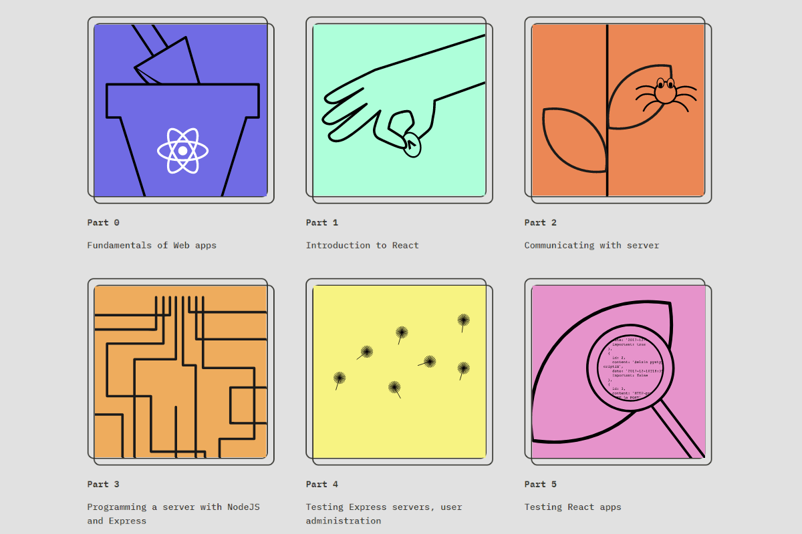

Rok 2021 z pohledu kariérního

Proč jsem začal kurz
Po dokončení třech prvních částí na freecodecamp, kde jsem se naučil responzivní web designu a základy JS, jsem hledal další místo, kde bych se mohl rozvíjet. Podle P1Xt a dlouhém zvažování "do čeho se pustit", jsem pokračoval tímto kurzem. Zaujal mě tech-stack, kterému jsem se chtěl věnovat, a taky forma výuky. Látka je probrána do podrobna a vysvětluje všechnu "magii" co se děje pod povrchem. Zaujala mě ale i šířka do jaké má kurz rozsah. Od frontendu po backend.
Prerekvizity kurzu
Na stránkách kurzu se dočteme:
"Participants are expected to have good programming skills, basic knowledge of web programming and databases, and mastery of basic use of the Git version management system. You are also expected to have perseverance and a capacity for solving problems and seeking information independently"
V počátcích kurzu jsem si musel doplňovat znalosti o JS. Později už šlo všechno hladce. Dobrý základ JS je důležitý, aby člověk rozlišil, co dělá framework, a co je čistý JS.
Co jsem se naučil
Já jsem v kurzu dokončil zatím 6 částí, tedy kapitoly 0 až 6. Viz obrázek výše. Podle tohoto popisu se dá lehce zjistit, jaký cíl si autoři kurzu vzali za svůj:
"Learn React, Redux, Node.js, MongoDB, GraphQL and TypeScript in one go! This course will introduce you to modern JavaScript-based web development. The main focus is on building single page applications with ReactJS that use REST APIs built with Node.js.. ... Other topics include debugging applications, configuration, managing runtime environments and NoSQL databases."
Kurz se z počátku soustředí na programování s reactem, později přidává programování na backendu v node.js a pak se to všechno spojuje do jedné aplikace. Kromě programování je kladen důraz na práci s GITem. Přes github se odevzdávají jednotlivá cvičení. Repo se pak postne do odevzdávacího systému, a odpovědi už se potom nedají měnit.
Kapitola 0 – Fundamentals of Web apps
Úvodní kapitola vysvětluje způsob práce v kurzu, odevzdávání cvičení a jiné informace. První cvičení spočívá ve vytvoření schématu, které vysvětluje, jak komunikuje klient se serverem. Probírány jsou síťové protokoly, DOM, a taky práce s konzolí. Kapitola je dobrým úvodem do vývoje webových aplikací.